How to configure Knox E-FOTA in SOTI MobiControl
Last updated September 27th, 2024
Categories:
This content is intended for customers looking to use Knox E-FOTA on SOTI MobiControl.
Environment
- Knox E-FOTA
- SOTI MobiControl
Overview
Knox E-FOTA requires the following components to manage firmware on your Samsung device fleet:
- The Knox E-FOTA client installed on your devices
- Devices that are enrolled in Knox E-FOTA in the SOTI MobiControl console
- A firmware management policy, created and assigned to the device fleet
This guide outlines the steps you must follow to configure Knox E-FOTA in SOTI MobiControl:
Prerequisites: Enroll devices in SOTI MobiControl and set up Samsung Knox cloud service
Step 1: Upload SOTI MobiControl devices to Knox E-FOTA
Step 2: Enroll SOTI MobiControl devices in Knox E-FOTA
Step 3: Configure Knox E-FOTA policies
Step 4: Lock or select your target firmware
Prerequisite: Enroll devices in SOTI MobiControl and set up Samsung Knox cloud services
Before you start the set up, ensure that the following prerequisites are met:
- Your enterprise devices are enrolled into SOTI MobiControl.
- You have a Samsung Knox account and have access to Samsung Knox cloud services.
If you have a Samsung Knox account with access to the Knox MSP Portal, you must create a new Samsung Knox customer account to use Knox E-FOTA in SOTI MobiControl.
If the Application Run Control policy is configured in your SOTI MobiControl profile, ensure the following Knox E-FOTA package names are included in the whitelist:
com.samsung.android.knox.efota
com.samsung.android.knox.efota.plugin
com.samsung.android.knox.core.efota
Step 1: Upload SOTI MobiControl devices to Knox E-FOTA
You can use two methods to upload SOTI MobiControl enrolled devices to Knox E-FOTA:
| Method | Description |
|---|---|
| Automatic upload | Automatically upload enrolled devices into Knox E-FOTA at specific time intervals. |
| Manual upload | Manually upload enrolled devices into Knox E-FOTA. Even with an automatic upload configuration enabled, you can perform a manual upload when required, without having to wait for the next scheduled automatic upload. |
Automatic upload of devices to Knox E-FOTA:
-
In the SOTI MobiControl console, click the top left menu, then go to Global Settings.
-
Select Android > Samsung Knox E-FOTA.
-
Next to Auto Upload Enrolled Devices, click CONFIGURE.
-
Ensure Auto Upload MobiControl enrolled devices to Knox E-FOTA is enabled.
-
Adjust the time interval for Frequency for Auto Upload.
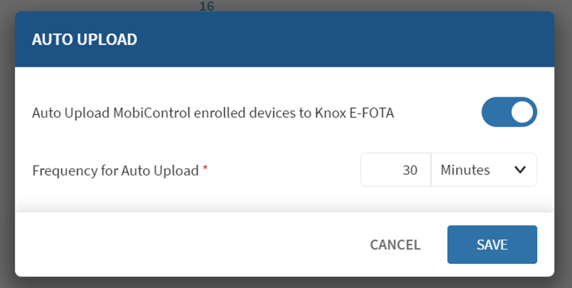
-
Click SAVE.
Manual upload of devices to Knox E-FOTA:
-
In the SOTI MobiControl console, click the top left menu, then go to Devices.
-
Select your device group or specific devices.
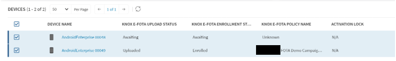
-
Under Device Actions, click Upload Device(s) to Knox E-FOTA.
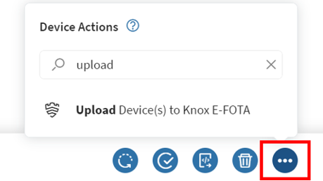
It may take several minutes for the manual upload to process. You can use the Refresh option to check for status updates. Once the upload is complete, the KNOX E-FOTA UPLOAD STATUS field updates from Awaiting to Uploaded.
Step 2: Enroll SOTI MobiControl devices in Knox E-FOTA
You can use the following methods to enroll SOTI MobiControl devices in Knox E-FOTA:
| Method | Description |
|---|---|
| Enroll with SOTI MobiControl App Policy | Enroll your SOTI MobiControl devices with SOTI MobiControl App Policy. |
| Enroll with Knox Service Plugin (Samsung OEM configuration) | Enroll your SOTI MobiControl devices with Knox Service Plugin (Samsung OEM configuration). |
Enroll devices with SOTI MobiControl App Policy:
-
In the SOTI MobiControl console, click the top left menu, then go to Policies.
-
Go to Apps.
-
Click New App Policy, then click Android > Android Enterprise.
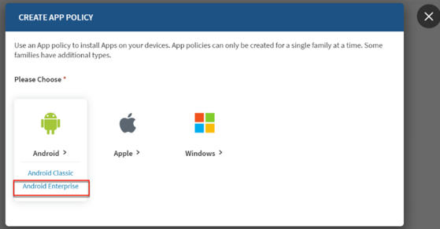
-
Enter a name for your policy.
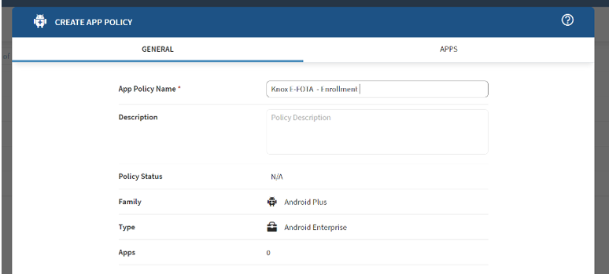
-
Click the APPS tab.
-
Click + NEW APP POLICY to open the SELECT APPS dialog.
-
Set the following policies under Apps:
Policy Value App Source Managed Google Play App Source > Select Samsung App Source > Apps Click MANAGED GOOGLE PLAY and search for Knox E-FOTA in the Managed Google Play dialog. Click Select. For Legacy OneUI Core devices, you can search for the Knox E-FOTA: Legacy OneUI Core app. If you’re unsure that your devices run Legacy OneUI Core, you can add and configure both apps to install on your devices. The proper app is automatically installed and launched on each device.
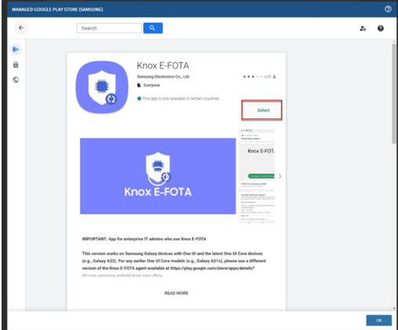
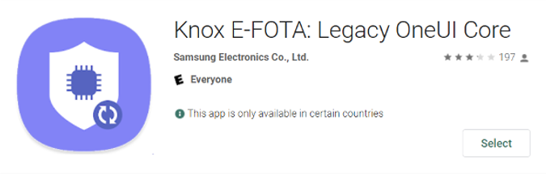
-
Click OK.
-
Click Add.
-
For the Knox E-FOTA app, click the menu icon, then click Configure.
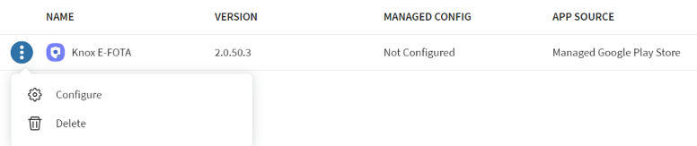
-
Go to Installation Options.
-
Enable Launch App After Installation, then click SAVE.
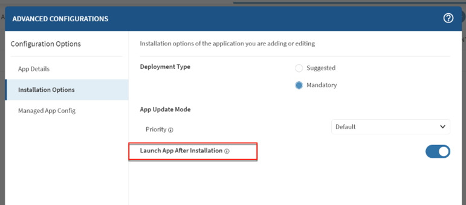
-
Click SAVE AND ASSIGN > ASSIGN to apply the policies to your devices.
Enroll devices with Knox Service Plugin (Samsung OEM configuration):
-
In the SOTI MobiControl console, click the top left menu, then go to Profiles.
-
Click Add Profiles.
-
Under Android, select any of the Android Enterprise management modes.
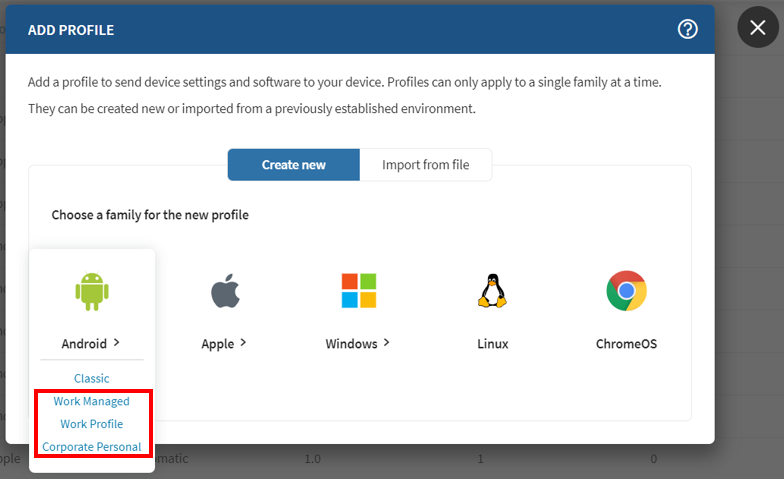
-
Enter the name of your new profile.
-
Open the CONFIGURATIONS tab, then click + to add a new configuration.
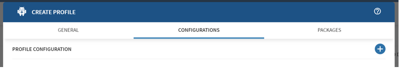
-
Click OEMConfig > Samsung.
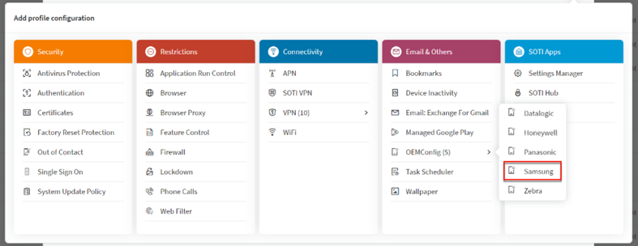
-
Expand Device-wide policies, and modify the following policies:
Policy Value Enable device policy controls Enable Firmware update (FOTA) policy > Enable firmware controls Enable Firmware update (FOTA) policy > Enable E-FOTA client installation & launch Enable -
Click SAVE.
-
Click SAVE AND ASSIGN > ASSIGN to apply the profile to your devices.
Step 3: Configure Knox E-FOTA policies
To configure Samsung Knox E-FOTA policies:
-
In the SOTI MobiControl console, click the top left menu, then go to Policies.
-
Click Firmware Management > Samsung Knox E-FOTA.
-
Click + NEW SAMSUNG KNOX E-FOTA POLICY.
-
Fill in the required fields based on your enterprises’ requirements. Set the Start Date to any date after the current day.
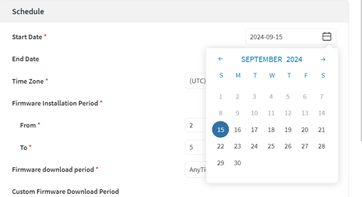
-
Click SAVE AND ASSIGN.
-
Select the devices to apply this policy to.
Enabling the option Exclude devices assigned to other Knox E-FOTA Policy excludes devices currently assigned to an existing policy. If this option is disabled, the new policy overrides any existing assigned policy.
-
Click NEXT.
Step 4: Lock or select your target firmware
After configuring the schedule for your policy, you must select or lock the target firmware:
-
Click the device model name.
Duplicate device models may display if they are provided by different carriers or regions.
-
Next to Target Firmware, select one of the following options:
Option Description Lock Current Firmware Locks the device to its current version. Specific Firmware Updates the device to any of the available versions higher than the current version. Latest Any Updates the device to the latest version available to Knox backend. Latest Upto Updates the device to the latest selected OS version. 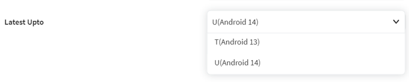
-
Click OK > ASSIGN.
A Knox E-FOTA policy is now scheduled for your device fleet.
On this page
Is this page helpful?